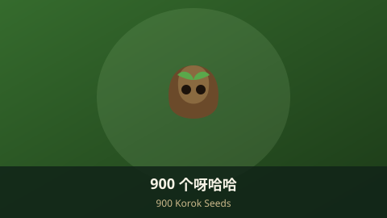
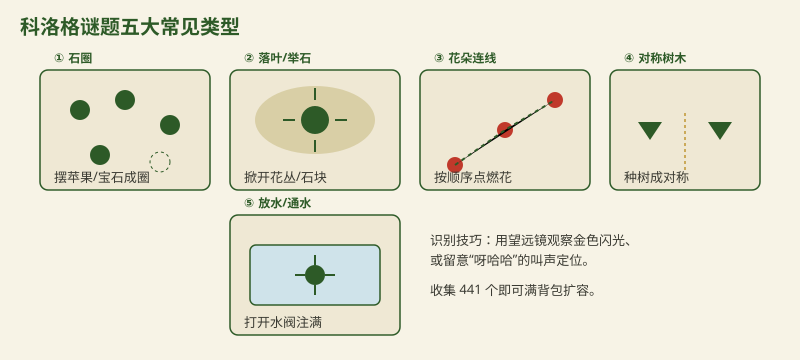

900 个呀哈哈位置总览（旷野之息）900 Korok Seeds Locations (Breath of the Wild)

科洛格（玩家昵称"呀哈哈"）是海拉尔大陆上藏得最深的收集要素，全作共有 900 个种子。它们最大的用途是找希卡族人赫斯图（Hestu）扩容背包——但注意，并不需要收集全部 900 个。Koroks (nicknamed "Yahaha") are Hyrule's deepest hidden collectible — 900 in total. You trade them with Hestu to expand your inventory, but you don't need all 900.
一、背包扩容机制1. Backpack Upgrade Mechanics
- 三栏扩容：武器、弓、盾的携带上限各可逐级扩充，每升一级消耗的种子数递增。Three slots: weapon, bow and shield capacities each level up, costing rising numbers of seeds.
- 441 个即满级：把三栏全部扩到上限共需 441 个种子，之后剩余的纯属收藏。441 to max: fully expanding all three takes 441 seeds; the rest are purely for completion.
- 黄金科洛格彩蛋：找齐 900 个回到科洛格森林，赫斯图会送你"黄金科洛格"（纯收藏成就）。Golden Korok: collect all 900 and return to Korok Forest for Hestu's golden gift — a completion trophy.
二、常见谜题类型2. Common Puzzle Types

- 石圈：按地面图案，在空位摆上苹果或宝石补全圆圈。Stone rings: place an apple or gem in the gap to complete the pattern.
- 落叶 / 举石：掀开花丛、搬开头顶或附近的石块露出科洛格。Lift / move: rustle bushes or lift/move a rock to reveal the Korok.
- 花朵连线：依次点燃一圈花，按正确顺序跑完。Flower trails: ignite a ring of flowers in the right order.
- 对称树木：在对称点种下一棵树（需先获得种子能力）。Symmetry trees: plant a tree at the mirror point (needs the tree seed ability).
- 放水 / 通水：打开水阀把水洼注满，或把球滚入洞口。Water / roll: open a valve to fill a pool, or roll a ball into a hole.
- 其他：拼图石板推到标记点、滑行标、光线反射、落叶堆等。Others: sliding slabs, light reflections, leaf piles and more.
三、识别与定位技巧（至少 4 条）3. How to Spot & Locate (4+)
- 望远镜看闪光：用希卡石板望远镜观察时，种子位置常有一闪一闪的金色光点。Scope for glints: in telescope view, seed spots often show a shimmering gold sparkle.
- 听叫声：靠近时科洛格会发出"呀哈哈"叫声，留意音频线索。Listen: nearby Koroks say "Yahaha" — use audio cues.
- 观察不对称：两棵树、两块石、两朵花中有一处"缺一个"，多半是谜题。Spot asymmetry: a missing tree/rock/flower in a pair usually means a puzzle.
- 互动地图辅助：配合本站高清地图或社区互动地图批量定位。Interactive maps: pair with our HD map or community maps to batch-locate.
- 找赫斯图升级：每扩几级就回他那里，避免背包满导致捡不到种子。Level up with Hestu: visit him periodically so a full bag doesn't block seeds.
想轻松开局？ 塞尔达 amiibo 卡可召唤稀有材料与装备，前期收集更顺。Easier start? Zelda amiibo cards summon rare materials and gear for a smoother early game.
查看 amiibo 推荐 ↗View amiibo ↗
四、小贴士4. Tips
💡 实用建议：💡 Practical tips:
- 不必全收集：441 个就满扩容，剩下按需收藏，省下大量时间。No need for all 900: 441 maxes your bags; collect the rest only if you want.
- 部分谜题需要炸弹、制冰等能力才能触发，先推进主线能力。Some puzzles need bombs, Cryonis etc. — progress the runes first.
- 用标记旗在地图上记下"疑似谜题点"，回头集中清理。Drop map pins on suspicious spots and clear them in batches.
- 下载本站全要素地图 PDF，种子密集区一目了然。Grab our full-map PDF to see dense seed areas at a glance.
AdSense 广告位 2 · 文章底部AdSense Ad 2 · End of Article
审核通过后在此粘贴广告单元代码Paste ad unit code here after approval